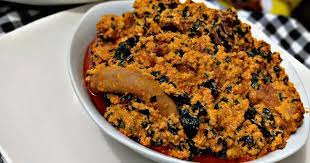

Ingredients

Egusi is super delicous
Taste like no other
Ingredients
- Ground melon
- smoked turkey
- Smoked Mackerel
- salt
- Beef stock cubes
- Nigerian pepper mix
- Dried Prawns
- Palm oil
- Spinach: any type of spinach can be used but I used baby spinach
Steps
- Heat palm oil on fire for one minute den add di Une( iru)
- Add stock small-small, den set di fire on low heat make e cook small.
- Add teaspoon size of di egusi paste mixture to di stock. Make sure say e form ball.
- Leave am to cook for 20-30 minutes so di egusi balls go cook well-well.
- Add di meat and fish and oda orisirisi.
- Add di pumpkin leaves and waterleaf
- Turn am and cover di pot, den leave am to cook for 7-10 minutes till di leaves don soft.
- Add di bitterleaf. No cover di pot again until e don cook finish for anoda 5-10 minutes.
- Turn am, check weda seasoning dey inside and evritin dey taste ok.